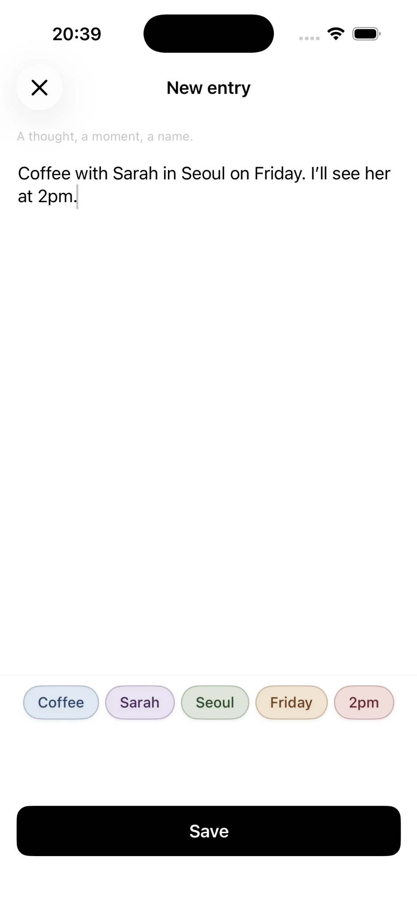
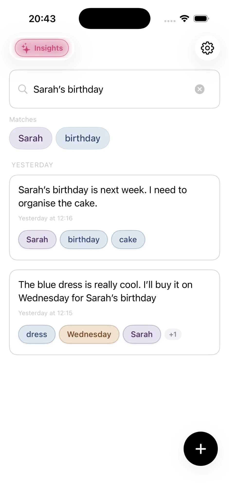

What are the main note-taking methods?
The most widely used note-taking methods are the Cornell method, the outline method, mind mapping, the charting method, Zettelkasten, PARA, the Bullet Journal, the commonplace book, daily notes and write-first (connected) notes. They differ in one key way: how much organising you do while you write, and how much you do later.
- Cornell method — split the page into notes, cues and a summary. Built for studying.
- Outline method — nested bullet points from general to specific.
- Mind mapping — a central idea with branches radiating outwards.
- Charting method — a table with columns for the things you want to compare.
- Zettelkasten — small, single-idea notes linked into a web of thinking.
- PARA method — sort everything into Projects, Areas, Resources and Archives.
- Bullet Journal — rapid logging with symbols for tasks, events and notes.
- Commonplace book — one book of quotes, ideas and lessons, grouped by theme.
- Daily notes — one running note per day; everything goes in.
- Write-first notes — write naturally and let connections appear afterwards.
60-second quiz
Which note-taking method suits you?
Five questions. No sign-up, and nothing you choose leaves your browser.
Your best match
The example note
Comparing methods in the abstract is hard, so every method below records the same small moment — the kind of thing most of us jot down several times a week:
Coffee with Maya on Tuesday. She's moving the launch to June and wants to pilot it in Galway first. Recommended a book on habit design. Follow up about the budget on Friday.
It contains a person, a place, three dates, a decision, an idea and a task. Watch what each method does with them.
1. The Cornell method
The Cornell method divides a page into three parts: a wide column for notes, a narrow column for cue questions, and a summary at the bottom. It was developed by Walter Pauk, an education professor at Cornell University, in the 1950s and popularised in his book How to Study in College.
How to do it
- Record notes in the right-hand column during the lecture or meeting.
- Reduce them afterwards into short questions or keywords in the left cue column.
- Recite — cover the notes and answer the cues from memory.
- Summarise the whole page in two or three sentences at the bottom.
- Review regularly, using the cues as a self-test.
2. The outline method
The outline method organises notes as nested bullet points, with main topics on the left and supporting details indented beneath them. It is the most common way people take notes, often without realising it is a method at all.
- Coffee with Maya — Tuesday
- Launch
- Moving to June
- Pilot in Galway first
- Reading
- Book on habit design
- Next steps
- Budget follow-up — Friday
- Launch
How to do it
Write each main topic flush left. Indent details beneath the topic they belong to, and indent again for sub-details. Keep each line short — phrases, not sentences.
3. Mind mapping
A mind map places one central topic in the middle of the page and draws branches out to related ideas, which branch again into details. The technique was popularised by Tony Buzan in the 1970s and suits people who think visually.
How to do it
Write the topic in the centre. Draw a branch for each main theme, using a single keyword per branch. Add smaller branches for details, and use colour or small drawings to make groups stand out.
4. The charting method
The charting method records notes in a table, with a column for each category you care about. It works best when information naturally falls into the same categories again and again.
| Topic | Decision | Who | When |
|---|---|---|---|
| Launch | Moved to June | Maya | June |
| Pilot | Galway first | Maya | Before launch |
| Budget | Follow up | Me | Friday |
| Reading | Book on habit design | Me | — |
How to do it
Decide your columns before you start — for example date, event, people and outcome for a history lecture, or option, cost and pros for a decision. Then fill one row per item.
5. Zettelkasten
Zettelkasten (German for "slip box") is a method of writing one idea per note, in your own words, and linking each note to related notes so that a web of thinking grows over time. It is associated with the sociologist Niklas Luhmann, who kept a box of around 90,000 index cards and credited it with his remarkable output of books and papers.
Maya wants to test in Galway before the wider June launch: a small, contained market shows problems early and cheaply.
→ see 12 (launch timing trade-offs)Moving launch to June buys time for the pilot's lessons. Question: when does caution become avoidance?
→ see 12a · 31c (habit design)Notice what is missing: the coffee, the day and the Friday task. A Zettelkasten keeps ideas, not events — the task belongs somewhere else.
How to do it
- Fleeting notes: jot quick thoughts as they come.
- Literature notes: summarise what you read, briefly, in your own words.
- Permanent notes: turn the best ideas into single-idea notes written to stand on their own.
- Link each permanent note to related ones, and explain why they are related.
6. The PARA method
PARA is a way of organising digital notes and files into four top-level categories: Projects, Areas, Resources and Archives. Created by productivity writer Tiago Forte as part of his "Building a Second Brain" approach, it sorts information by how soon you will act on it rather than by subject.
One conversation, three destinations. PARA asks you to decide where each piece lives.
How to do it
- Projects have a goal and a deadline — "launch in June".
- Areas are ongoing responsibilities with no end date — health, finances, your team.
- Resources are topics of interest you might use one day.
- Archives hold anything inactive from the other three.
7. The Bullet Journal
The Bullet Journal is a paper-based system for tasks, events and notes that uses short entries marked with simple symbols, reviewed and "migrated" forward each month. It was created by designer Ryder Carroll and shared publicly in 2013.
• task ○ event – note. Unfinished tasks are migrated to the next day or month, or crossed out.
How to do it
Keep an index at the front, a future log for the months ahead, a monthly log and daily logs. Write short entries with symbols as the day goes. At the end of each month, review open tasks and either migrate them forward or let them go.
8. The commonplace book
A commonplace book is a single notebook for collecting quotes, ideas, lessons and observations, usually grouped under topic headings. The practice dates back centuries — the philosopher John Locke even published his own method for indexing one in the late 1600s.
"Test it small before you go big."— Maya, over coffee
A book on habit design (Maya's recommendation)
Only the lasting ideas make it in. The dates and the task don't.
How to do it
Copy in anything worth keeping — a line from a book, advice from a friend, a lesson learned — under a topic heading. Keep a simple index at the back so you can find themes again. Reread it regularly; that is where the value comes from.
9. Daily notes
With daily notes, you keep one note per day and write everything into it — thoughts, meetings, tasks and ideas — without sorting anything. The date is the only structure, which makes it one of the easiest methods to keep up.
How to do it
Open today's note and write. Add a time if you like. At the end of the week, skim the week's notes and pull out anything that needs action.
10. Write-first (connected) notes
Write-first note-taking means writing in ordinary sentences, without folders, tags or templates, and relying on software to recognise the people, places, dates and ideas in your writing and connect related notes automatically. It keeps the ease of daily notes and fixes their biggest weakness: finding things again.
Coffee with on . She's moving the launch to and wants to pilot it in first. Recommended a book on . Follow up about the budget on .
The note is untouched: no filing decision, no reformatting. The structure lives underneath. Months later you don't need to remember the day, the folder or the exact words — you remember "something about Galway", tap it, and every note mentioning Galway is there.
How to do it
- Just write — full sentences, the way you'd tell a friend.
- Keep the specifics. Names, places and dates are what make notes findable later, so write "Maya" rather than "she".
- Don't file. Resist creating folders; let connections do the work.
- Come back through the connections. Start from a person, a place or an idea and follow it through time.
This is the method Onuri is built around. On iPhone, Onuri recognises people, places, dates and ideas on the device as you write, turns them into tappable paths through your notes, and never asks you to create a folder. Read more about folderless notes and the automatic second brain idea.


Note-taking methods compared
| Method | Best for | Setup | Upkeep | On a phone |
|---|---|---|---|---|
| Cornell | Lectures, revision | Low | Low | Fair |
| Outline | Meetings, talks | None | Low | Good |
| Mind map | Brainstorming | Low | Low | Fiddly |
| Charting | Comparing facts | Medium | Low | Fiddly |
| Zettelkasten | Research, writing | High | High | Fair |
| PARA | Projects, work files | Medium | Medium | Good |
| Bullet Journal | Tasks, planning | Medium | Medium | Paper-first |
| Commonplace | Quotes, lessons | Low | Medium | Good |
| Daily notes | Capturing everything | None | Low | Good |
| Write-first | Life, people, memory | None | None* | Excellent |
*When software handles the connecting. "Upkeep" means the organising you must keep doing for the method to keep working.
How to choose a note-taking method
The right method depends less on which is "best" and more on what the notes are for. A simple rule of thumb:
- Studying for exams? Use Cornell. The cue column is built-in revision.
- Writing essays, a thesis or a book? Try a Zettelkasten, and give it months.
- Managing lots of work projects and files? PARA keeps what's active in front of you.
- Brainstorming or planning? Start with a mind map, then turn it into an outline.
- Love paper and to-do lists? The Bullet Journal.
- Want to remember your life — people, places, conversations? Write-first notes, or daily notes with good search.
Most people don't need one method. They need a place to capture everything, plus one method for the thing that matters most right now.
Methods combine well. Plenty of students use Cornell for lectures and a simple daily note for everything else. Many writers keep a Zettelkasten for ideas but write-first notes for their life. The mistake is forcing every kind of note through the heaviest system you own.
Why most note-taking systems get abandoned
If you've started a note-taking system with enthusiasm and quietly stopped a few weeks later, you're in good company. The pattern is usually the same, and it has little to do with willpower.
Every method has two costs: the cost of capturing and the cost of maintaining. Capturing is the part you see — writing the note. Maintaining is the hidden part — filing, tagging, linking, reviewing and migrating. Methods that ask for a lot of maintenance work beautifully for the weeks you have energy for it, then collapse when life gets busy, because the notes you skipped filing make the whole system feel untrustworthy.
The methods people stick with tend to have a maintenance cost close to zero, or a payoff that clearly exceeds it. That's why daily notes survive so often: nothing to maintain. And it's why write-first tools try to take maintenance off your plate entirely — so the system keeps working on the weeks you don't.
So before choosing a method, ask one honest question: what will this system look like on my busiest week of the year? Choose the one that still works then.
Frequently asked questions
What is the best note-taking method?
There is no single best method. Cornell is the most effective for studying, Zettelkasten for research and writing, PARA for organising work projects, and write-first or daily notes for everyday life. The best method is the one you will still be using in six months.
What is the easiest note-taking method?
Daily notes and write-first notes are the easiest, because they require no setup and no filing. The outline method is the easiest structured method, since most people already write in bullet points.
Which note-taking method is best for students?
The Cornell method is the most recommended for students because it builds review into the page: cue questions become a self-test before exams. Mind maps are useful for planning essays, and the outline method suits well-structured lectures.
Is Zettelkasten worth it?
For people who write and think for a living — academics, researchers, authors — a Zettelkasten can be extremely valuable, because ideas compound over years. For most other people, the upkeep is higher than the payoff, and a lighter method works better.
What is the difference between PARA and Zettelkasten?
PARA organises notes by how actionable they are — projects, areas, resources and archives — and is mainly for getting work done. Zettelkasten organises ideas by linking them to each other, and is mainly for developing thinking and writing. Some people use both.
Can you take notes without folders?
Yes. Daily notes use only dates, and write-first notes rely on search and automatic connections between people, places, dates and ideas instead of folders. Many people find they retrieve notes more reliably this way, because they remember what a note was about rather than where they filed it.
Onuri: Notes & Life Tracker
Try the write-first method on your iPhone.
Write naturally. Onuri recognises the people, places, dates and ideas in your notes on your device and connects them for you — no folders, no tags. Unlimited notes, private iCloud sync, search and TXT/CSV export are free.
Download Onuri Free On your computer?Scan with your iPhone
On your computer?Scan with your iPhone